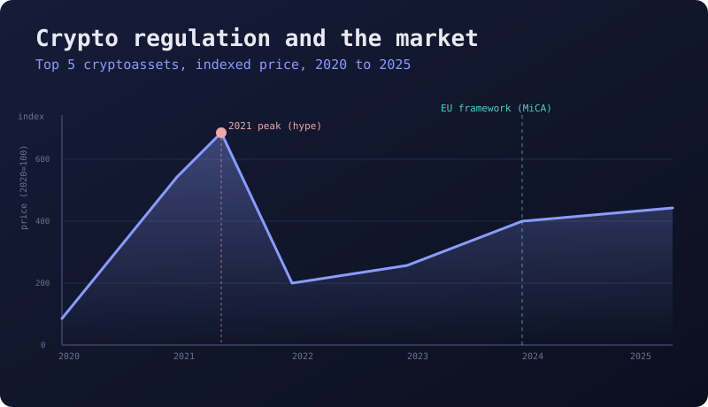

Crypto Regulation: Measuring the Market Response
The question
After the 2020 to 2021 run-up, the European Union and the United States took clearly different routes: the EU moved toward one codified framework, the US relied on enforcement and scattered guidance. I wanted to answer one thing with numbers instead of opinion. When a real legal measure lands, does the market actually react, and does it react differently in the two places?

The data
I built the panel from Refinitiv Eikon and Datastream: the five largest cryptoassets by capitalisation, with daily price, return and volume from 2020 to 2025. I cleaned the series, aligned them to one calendar, computed log returns, and matched every asset-day to a hand-built timeline of regulatory events. The result is one tidy, model-ready table.
# 1. Pull the top five cryptoassets from Eikon / Datastream
assets = ["BTC", "ETH", "BNB", "XRP", "ADA"]
px = get_prices(assets, start="2020-01-01", end="2025-12-31")
# 2. Clean: align the calendar, fill gaps, take log returns
px = (px.resample("D").last()
.ffill()
.pipe(drop_outliers))
ret = np.log(px).diff()
# 3. Regulation dummy: 1 = measure announced, in force, or a case
df["reg_dummy"] = df["date"].map(reg_calendar).fillna(0)
df["region"] = df["asset"].map(jurisdiction)
# 4. Merge the Fama-French factors and inflation, ready to model
df = df.merge(ff_factors, on="date").merge(cpi, on="date")
df.to_parquet("panel_clean.parquet")| date | asset | ret | mkt | infl | reg |
|---|---|---|---|---|---|
| 2021-04-12 | BTC | 0.031 | 0.018 | 0.004 | 0 |
| 2023-06-20 | ETH | −0.012 | −0.009 | 0.006 | 1 |
| 2024-12-30 | BNB | 0.008 | 0.005 | 0.002 | 1 |
The five assets and the dummy
Top 5 cryptoassets
The five largest by market capitalisation over the window: BTC, ETH, BNB, XRP and ADA. Together they make up the large majority of the market, so the panel stays representative without drowning in thin, illiquid coins.
The regulation dummy
A binary variable per asset and date. It is 1 when regulation is in play: a measure announced, coming into force, or an enforcement case. It is 0 in a free-market window with no relevant regulation. That single switch is what lets the model isolate the regulatory effect.
The model
The backbone is a Fama and French style factor model, estimated across the five assets, extended with the regulation dummy. Returns are explained by the usual market factors and inflation, and the dummy carries the part that regulation explains on top of ordinary market movement. I ran it in two further variations so the result could be read from more than one angle.
Base
Market factors and inflation, plus the regulation dummy. The dummy coefficient is the headline effect.
Geographic split
The same model run with a region variable, so the American market and the European one are compared side by side rather than pooled.
Counterfactual
A scenario variation that asks the opposite question: what the path would look like under more, or less, regulation than actually happened.
One dummy, two regimes, three views
Framing regulation as a binary indicator inside a factor model turns a vague debate into something estimable and falsifiable. The geographic split and the counterfactual then let me say not just whether regulation mattered, but where it mattered and what a different policy path might have meant, which is the part that makes the analysis useful rather than just descriptive.
Behind the graphs
Each asset's excess return is explained by the market factor, the size and value factors from Fama and French, and inflation (π). The term that matters here is δ·D: the coefficient on the regulation dummy. Under the usual assumptions, δ measures the average shift in returns during regulatory windows once the ordinary factors are accounted for, so a δ that is positive and significant means regulation moved the market beyond normal noise.
The forward-looking part reuses the same structure for simulation: holding the factors at modelled paths and flipping the dummy on or off lets the model project how returns would behave under stronger or weaker regulation, which is exactly the counterfactual variation.
The result

What the model showed
The two regions behaved very differently. In the EU the regulation dummy came out clearly positive and statistically meaningful, strongest around the introduction of the single framework. In plain terms, when the rules became clear, the market got steadier, as if clarity brought activity onshore instead of scaring it away. In the US the same dummy sat close to zero and was not statistically different from noise. That does not mean enforcement can never matter; it means that during these years the market was driven far more by hype than by any single legal measure, so the regulatory signal simply got drowned out.
Why I built it this way
I wanted a structure where the data could prove me wrong, and for the US it essentially did. The full study behind this was a long and detailed piece of work, with several variables and event scenarios, and it runs to around a hundred pages, far too specific to drop into a portfolio. What I have kept here is the core idea: a clean factor model, a regulation dummy, and two variations that let the same data answer where regulation worked and what a different policy path might have looked like.
The bigger picture
Capstone project
This was the culmination project for my Master's degree in Finance and Banking, built on real, cleaned datasets and large data clusters rather than toy examples. The version here keeps the core idea; the full study runs far longer and stays under wraps.
Before and after
After
One tidy panel, one factor model, one binary switch. The question becomes a coefficient you can test, argue with, and be wrong about in public.
My touch: I built it so the data could prove me wrong, and for the United States it did exactly that. That result stayed in.
Before
A debate settled by whoever spoke last. Everyone had a view on whether regulation helped or hurt crypto, and nobody had a number attached to it.
Stack: Refinitiv Eikon, Datastream, Python, Fama-French factor model, regulation dummy, scenario simulation